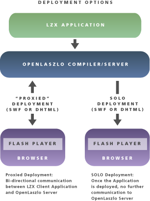
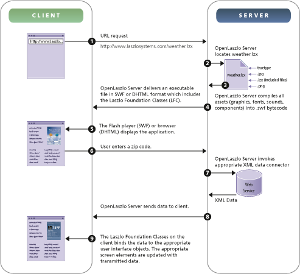

OpenLaszlo is a platform for rich Internet applications that are easy to develop and deploy. The OpenLaszlo system architecture combines the power and usability of client/server design with the administrative advantages and cost effectiveness of web applications.
OpenLaszlo applications are written in the XML language LZX, which compiles to any of several runtime targets, including, as of OpenLaszlo 4.0, sw7, sw8, and native browser JavaScript, also sometimes called DHTML or Ajax. Applications compiled to SWF8 or SWF9 run in the Flash 9 player.
OpenLaszlo applications can be made available on the web, or deployed in either of two ways:
Proxied. The OpenLaszlo Server runs on your machine and
Compiles source programs as necessary and sends the resultant file to be executed on the client; and
Proxies interactions between the client and other servers on the Internet, performing data manipulation as necessary
SOLO You use the OpenLaszlo compiler to "precompile" programs and make the resulting file (in SWF or JavaScript) available on your server. When executed on the client, the application contacts other servers directly, without mediation by the OpenLaszlo Server. This "serverless", or Standalone OpenLaszlo Output deployment is called SOLO.
Figure 1.1. Applications may be deployed either SOLO or proxied by the OpenLaszlo Server

Later chapters explain in detail the differences between proxied and SOLO OpenLaszlo applications. In general:
Proxied applications can do a few things that SOLO applications cannot do, but they are more trouble to deploy and sometimes perform more slowly.
SOLO applications are easier to deploy and sometimes better-performing.
In many cases you don't need to decide which deployment mode to use until you're ready to deploy, and the default choice is usually SOLO. In reading the discussions below, keep in mind that when you deploy your applications statically, the run-time capabilities of OpenLaszlo Server (such as media transcoding) will not be available.
The OpenLaszlo Server is a Java application that executes in a J2EE servlet container. The OpenLaszlo Server may communicate with back end servers and data sources using a variety of protocols. OpenLaszlo applications written in LZX are compiled by the OpenLaszlo Server and served either as bytecode to a plug-in that runs in the client's web browser (such as Flash or J2ME) or as JavaScript (DHTML) that is directly executed by the browser itself. This constitutes the front end. OpenLaszlo applications run consistently and reliably on a variety of operating systems and device types, including Windows, Pocket PC, Mac OS, Linux, and Solaris, and a variety of mobile and set-top box platforms.
When compiling for execution by the Flashplayer, the OpenLaszlo Server outputs bytecode in the SWF ("shockwave format") file format recognized by the Macromedia Flash player (version 7 and higher).
When compiled for execution natively in the browser, the OpenLaszlo Server outputs JavaScript. This script is human readable but optimized for size and execution speed, with comments removed, variable names shortened, etc.
In the future, OpenLaszlo may support other run-time clients as they become widely available.
In the OpenLaszlo context, client means an LZX application executing in user's web browser, and server means OpenLaszlo Server (which may, in turn, communicate with other servers). The LZX client and OpenLaszlo Server server communicate over HTTP; the OpenLaszlo Server sends bytecode and the LZX application sends XML.
All OpenLaszlo platform features, including streaming media and notification, are delivered over HTTP or HTTPS. OpenLaszlo-based applications thus maintain compatibility with standard corporate firewalls. This is a critical capability for public Internet applications.
The OpenLaszlo Server executes within a standard J2EE application server or Java servlet container running JRE 1.4 or higher. These application server environments scale well, as does the OpenLaszlo Server itself. OpenLaszlo applications can run on any OS supported by these server products. OpenLaszlo supports Windows, Solaris, Linux and Mac OS X server environments.
The OpenLaszlo Server consists of four main subsystems:
the Interface Compiler
the Media Transcoder
the Data Manager
the Cache

The Interface Compiler consists of an LZX Tag Compiler, and a Script Compiler. The Interface Compiler additionally invokes the Media Compiler and the Data Manager to compile media and data sources that are baked in to the application.
The LZX tag and script compilers convert LZX application description tags and JavaScript into executable (swf) bytecode for transmission to the OpenLaszlo client environment. This code is placed into the cache, from which it is sent to the client. Depending on how the application is invoked, it is transmitted either as a SWF file, or as an HTML file with an embedded SWF object.
The Media Transcoder converts a full range of media assets into a single format for rendering by OpenLaszlo's target client rendering engine. This enables an OpenLaszlo application to present supported media types in a unified manner on a single canvas, without the distraction of multiple helper applications or supplemental playback software.
The Media Transcoder automatically transcodes the following media types: JPEG, GIF, PNG, MP3, TrueType, and SWF (art/animation only).
The Data Manager is comprised of a data compiler that converts all data into a compressed binary format readable by OpenLaszlo applications and a series of data connectors that enable OpenLaszlo applications to retrieve data via XML/HTTP. OpenLaszlo applications can thus interface across the network with databases, XML Web Services, and Web-server based files or executables.
The cache contains the most recently compiled version of any application. The first time an OpenLaszlo application is requested, it is compiled and the resultant SWF file is sent to the client. A copy is also cached on the server, so that subsequent requests do not require waiting for the compilation.
OpenLaszlo's client architecture consists of the OpenLaszlo runtime library called the Laszlo Foundation Class, or LFC, a core library compiled into every OpenLaszlo application that provides run-time services (such as, for example, a timer and an idling function) and a presentation renderer to provide 2D graphics rendering and sound playback. None of these classes rely on Flash services or use the Flash object model. When compiled to .swf format, the Flash Player is used solely as a rendering engine.
When this application is running, even though it isn't "doing anything," it is maintaining a connection with the server, and all the capabilities necessary for running an LZX application have actually been downloaded.
There are four primary components within the LFC: the Event System, the Data Loader/Binder, the Layout & Animation system and a set of Application Services.
The event system recognizes and handles application events such as user mouse clicks or server data pushes. This component permits standard event-based programming on the client. Relative to conventional Web implementations, OpenLaszlo applications typically reduce the processing load placed on the host server, by enabling tasks such as client-side sorting, processing, validation, and dynamic display across all application states.
The data loader serves as a data traffic director, accepting data streams across the network from the OpenLaszlo Server and binding data to appropriate visual display elements such as text fields, forms, and menu items.
The layout and animation system provides OpenLaszlo applications with a constraint-based screen layout of interface elements and algorithmic animation of interface state changes. This component enables you to build a dynamic application interface with minimal programming. It allows you to position a variable number of interface elements using either relative positioning or absolute pixel positioning. With the animation algorithms, screen interface updates are rendered in a visually continuous manner, clearly communicating the application's state changes to the user.
This example uses an OpenLaszlo application stored on the server as weather.lzx. The following diagram
illustrates how this application would be executed by the OpenLaszlo Server.
Figure 1.6. OpenLaszlo Application Data Flow diagram for the Weather Application (proxied)

Starting with a user entering a URL that requests the Weather application, this diagram illustrates the data flow sequence from client to server, integrating data from an XML Web service, and sending the result back to the client.
In OpenLaszlo applications, presentation-related logic is separated from business logic and executed locally on the client. The OpenLaszlo server sends the client compressed binary data rather than text, reducing the amount of data transported in comparison to HTML-based and other Web applications. Caching on both the server and client eliminates unnecessary code execution and data transmission.
The OpenLaszlo application platform supports the SSL security model. Data transmissions across the Internet can be encrypted using SSL encryption over HTTPS. When compiled for native execution by the browser, the security model is that of whichever browser is used to execute the application.
The security model employed by OpenLaszlo applications differs slightly depending on the runtime target. OpenLaszlo applications compiled to swf format execute on the client computer within the secure "sandbox" environment of the Flash Player, and cannot write to the local file system or access the client's native environment.
Web services and databases used by an OpenLaszlo application are also secured using a per-user authentication model. This mechanism prevents use of the OpenLaszlo Server as a proxy or gateway into insecure services or data.
The OpenLaszlo architecture is designed to support multiple device types. Its dynamic layout mechanisms enable simple modifications to such properties as an application's overall size to be intelligently applied by the platform. This simplifies adapting an application to work on screens and devices of different size.
All screen visualizations in OpenLaszlo applications use time-based rather than frame-based animation, and thus transparently accommodate the processor speed differences of various device types. An interface transition specified to take 500 milliseconds will take 500 milliseconds regardless of the number of frames shown — faster processors result in more frames and smoother animation, but the same duration of transition.
OpenLaszlo provides partial support for the Microsoft Active Accessibility specification, which states, "By using Active Accessibility and following accessible design practices, developers can make applications running on Windows more accessible to many people with vision, hearing, or motion disabilities." For a discussion of this feature, see Chapter 15, Program Structure. This support requires installation of third party software on the client machine, and is only available in the OpenLaszlo targets that run the Flash Player under Internet Explorer.